De Grønne Herrene
På Skapernes Skaperne tid hersket De Grønne Herrene over Storskogen (the Great Wood, Storskogen) og det som nå er Ferriers Myr (Ferrier's Fen, Ferriers Myr). De dyrket fram ting, avlet og foredlet. De bøyde villmarkas ånder Villmarkas ånder etter sin vilje, og skapte nye livsformer – noen av dem skulle med tiden bli Skogfolket Skogfolket.
Men selv om de mestret selve livet, fryktet de døden. De grudde seg for den trøstesløse evigheten som ventet bak den Siste Døren Døden og de udøde. De avlet fram fae Fae av ånd og kjøtt, og tok kraften deres i bruk for å skape falske etterliv. Og: det virket. Dusinvis av Grønne Herrer lot seg mumifisere og gravlegge, og drømmer for evig om overdåd og under.
Noen av faeene begynte likevel å harmes over trelldommen sin. De la planer i det skjulte og gjorde opprør mot herrene sine. De rensket ut gravene, satte de levende for sverdet og jaget de overlevende på flukt.
De Grønne Herrene, i panikk og desperasjon, kalte på Tingene Der Nede Tingene Der Nede og brukte kraften deres til å knuse opprøret. Men dette vakte i sin tur vreden til andre skapere. De utførte en mektig magi som fikk et stort område av De Grønne Herrenes land til å synke sammen, senket det ned i en myr og drepte tusener. Faeene samlet seg og beleiret de overlevende ved Vor Svetelik Vor Svetelik. Med saken sin tapt slapp De Grønne Herrene løs en siste stor bølge av redsel før de trakk seg tilbake inn i jordens innvoller. Der har de blitt værende, stadig mer vridde og avskyelige, og er blitt til Fomoraij Fomoraij.
Navn
Slavisk-klingende: Athanasi, Bogdana, Chedomir, Dozhena, Darobor, Jigorii, Kresimira, Mstislava, Nikalor, Radomira, Tikomar, Tomila, Vecheslav, Voitsek, Yaroslana, Yevena.
Kroker
- Et jordskjelv eller en skogbrann avdekker en lenge begravd ruin etter De Grønne Herrene nær Stonetop.
- En farlig vekst farlig vekst brer seg aggressivt gjennom Storskogen
- En gammel lærd eller et gammelt manuskript dukker opp og forteller om en relikvie etter De Grønne Herrene som kan gi langt bedre avlinger.
- En tosk våger seg inn i en Grønn Herres grav og kommer tilbake med en verdifull skatt, men blir forfulgt av mumifiserte tjenere og smittet av en grusom råtesykdom.
Temaer
Velg, eller slå .
| 1 | Dyr eller skadedyr: avlet, forandret eller tatt i bruk |
|---|---|
| 2 | Planter og ting som gror: storslåtte og/eller uvanlige |
| 3 | Tilpasning/vekst/ utbredelse/livskraft |
| 4 | Kimærer: skapninger med uensartede deler, trekk fra andre organismer |
| 5 | Graver, mumifisering, konstruerte etterliv |
| 6 | Villmarkas ånder eller det de legemliggjør, bundet eller tatt i bruk |
| 7 | fae/opprør |
| 8 | Fordervelse fra Tingene Der Nede, og slå igjen |
| 9-12 | Laget for kjemper, og slå igjen |
Steder
Velg, eller la noen slå Skjebneterningen.
| 1-4 | Etterlatte spor etter deres nærvær og innflytelse (til høyre) |
|---|---|
| 5-6 | En ruin |
Etterlatte spor
Velg, eller la noen slå Skjebneterningen.
| 1 | Et vesen, fanget i et underlig tre, en runeristet stein eller et naturlig landskapstrekk (neste side) |
|---|---|
| 2 | Underlige planter (neste side) |
| 3 | En strekning av de Brutte Veiene, avdekket eller så vidt synlig |
| 4 | En villmarksånd, bundet til et nyttig formål (neste side) |
| 5 | Nyttig eller verdifull flora som vokser i overflod |
| 6 | En veistein |
Et vesen, fanget
For eksempel:
- Et tre med metallisk glans, med ved gjennomsyret av jern. Stammen snor seg rundt seg selv som et garnnøste, og en opprørsk fae sitter fanget inni.
- En mannshøy klump av blodsugende insekter – et vesen av smerte og sykdom – fanget i rav.
- Et mektig, gammelt hyll, med bark som bein, som siver svart kvae fra den dødløse redselen det holder bundet i røttene.
- En stor steinblokk som minner om et grådig, hylende beist, innsnørt i forsteinede ranker og røtter og for det meste begravd/nedsunket.
- En fae låst i form av et tre, med en trassig snerring så vidt synlig.
Underlige planter
For eksempel:
- En lund med trær, plantet i underlig regelmessige mønstre (pene rader, spiraler osv.)
- Trær/ranker med stammer eller stengler flettet rundt hverandre slik at de danner vegger, forheng, tak osv.
- Busker/tornekratt i grove, klipte figurer uten tegn til stell
- Storslåtte skulpturer av levende tre til minne om lenge døde Grønne Herrer
- Mose, lav, mugg eller sopp som gløder, eller nynner, eller avgir varme osv.
- Planter som delvis består av umulige materialer (blomster/blader av glass, bark gjennomsyret av metall, en ranke med torner av bein, et forsteinet tre som blomstrer med vanlige blomster osv.)
- Et enormt og eldgammelt tre, behengt med gylglyd-ranker Storskogen som verner en artefakt etter De Grønne Herrene.
En villmarksånd, bundet
For eksempel:
- En ånd av vinter/dvale bundet til en grotte av ranker som vokser i runemønstre. Andre runer fyller dem som nærmer seg med gru. Et eldgammelt vesen ligger i dvale der inne.
- En lysning eller eng frodig av spiselig korn, stelt av en fruktbarhetsånd Villmarkas ånder bundet til en menhir som står midt på marken.
- En frukthage, voktet av en birdwaig og glasbren-døtrene hennes, en lang slekt av ånder og trær bundet av en eldgammel ed til De Grønne Herrene.
- En ring av fem eldgamle piletrær, hvert med en runeristet hulning, rundt en strekning med myr. En ånd av gjenvinning og forfall er bundet der inne. Alt som går ut i myra, blir snart sugd ned i gjørma, der det råtner og løses opp i et skremmende tempo.
- Et stort steinalter på en trebar haugtopp, utsatt for sola. En ånd av vekst og livskraft er bundet der inne, næret av blod, og gir gaver av styrke.
- En obelisk av melkehvit krystall som presser seg opp av den moldrike jorda, gjennomvevd av rankeslynger som danner snirklete runer av binding. Ånden som er bundet der inne, kan trekke sykdommer og plager ut av dem som rører ved den, men ånden er egenrådig og prosessen er ulidelig.
Ruiner
Velg eller slå for tema, byggverk, formål, arkitektoniske elementer og tilstand. Legg ruinen i et passende terreng (se Storskogen for Storskogen eller Ferriers Myr for Ferriers Myr). Befolk den med etterlatte spor Steder, artefakter artefakter og/eller farer farer fra De Grønne Herrene eller den aktuelle regionen.
| 1 | Vidstrakt anlegg av «mindre» bygninger |
|---|---|
| 2 | Én enkelt, mindre bygning |
| 3 | Jorddekket haug |
| 4 | Eldgamle trær, med rom og byggverk i hulninger og greinkløfter |
| 5 | Underjordisk(e) hvelv |
| 6 | Ziggurat/pyramide/kuppel |
| 1 | Bolig (hjem, brakke, sovesal osv.) |
|---|---|
| 2 | Innesperring (festning, fengsel, kennel, menasjeri osv.) |
| 3 | Lagring (kjeller, hvelv, lagerbygning, bibliotek, samling osv.) |
| 4 | Produksjon (verksted, planteskole, fabrikk, kjøkken, slakteri osv.) |
| 5 | Esoterisk (laboratorium, alter, operasjonssal osv.) |
| 6 | Grav (for en Grønn Herre, forfedrene, tjenerne eller skapningene deres osv.) |
| 1 | Enorme heller av glatt stein (hvit marmor, granitt, serpentin) hugget med snirkler og relieffer |
|---|---|
| 2 | Mose og lav i slående farger, som vokser i dekorative mønstre |
| 3 | Rav, agat, geoder, ja til og med ubearbeidede kampesteiner med interessante former |
| 4 | Elfenben, bein, horn, gevir, pels, silke – noen ganger smeltet sammen med eller voksende ut av tre eller stein |
| 5 | Søyler, buer eller til og med vegger av forsteinet tre, tilsynelatende grodd i form |
| 6 | Ranker og slynger (ofte forsteinet eller gjennomsyret av metall) som klamrer seg til flatene i forgreinede virvler, segl og runer |
De fleste skaperruiner er laget for kjemper – folk to eller til og med tre ganger så høye som mennesker – men ofte med mindre rom, ganger og så videre for tjenerne deres.
| 1-2 | Knust og lagt øde av tid, krig eller hærverk; for det meste begravd, nedsunket og/eller overgrodd; formålet ugjenkjennelig |
|---|---|
| 3-4 | Smuldrende, i stor grad begravd, nedsunket og/eller overgrodd |
| 5 | Begravd, nedsunket og/eller overgrodd, men stort sett intakt |
| 6 | Helt synlig og underlig godt bevart |
Se Vor Svetelik (De Grønne Herrenes ruinby, Vor Svetelik) for flere eksempler.
Mange ruiner etter De Grønne Herrene har (eller bevares av) fae-riker Fae.
Spillerpersonene sporer nailadd (kjempestore hoppeedderkopper) gjennom Storskogen, og jeg tror de er på vei mot en ruin etter De Grønne Herrene. Jeg slår 6 for tema (villmarkas ånder, bundet eller tatt i bruk), 6 for byggverk (ziggurat/pyramide/kuppel), 4 for formål (produksjon), 4 for arkitektoniske elementer (elfenben, bein, horn, gevir, pels, silke) og 3 for tilstand (smuldrende, i stor grad begravd og overgrodd). Jeg grunner en stund og kommer så fram til dette:
En smuldrende ziggurat, halvt sammenrast og for det meste dekket av jord, trær og spindelvev. Inni er en mindre ziggurat med et silketeppe som viser Edderkoppenes Mor, en mektig elementærånd. I gamle dager var dette stedet fullt av edderkopper i alle størrelser, som spant silke og vevde umulige stoffer for De Grønne Herrene. Nå blir edderkoppene bare store, sultne og underlig intelligente.
Artefakter

Diverse skatter- En mumifisert fugl i en leirkrukke◇ (skjør, Verdi 0)
- En mengde irrete ◇ bronseøkser av eldgammelt håndverk, med vakkert bevarte treskaft (grov og Verdi 0 som de er; hånd og Verdi 1 hvis de settes i stand)
- En vakker silkeskjorte, brodert med rankemønstre (Verdi 1)
- Stabler av rått, ubearbeidet tømmer med metallisk glans i åren; utrolig sterkt, men utrolig vanskelig å bearbeide (ubevegelig, Verdi 2)
- En skjellbrynje for noen som er 6 meter høy. Skjellene er underlige, organiske, halvgjennomsiktige og regnbueskimrende langs kantene. Tykke, vridde ranker vokser ut av brynjen der kroppen skulle vært; ingenting annet vokser i nærheten. Brynjen er upraktisk og uhyggelig, men hvis den hentes ut hel, kan den innbringe en anstendig pris (ubevegelig, Verdi 2) hos en samler.
- Et altfor stort ◇◇ drikkehorn, med gull og rav smeltet inn i hornet på umulige måter (Verdi 3)
- Et høyt, tykt, knudrete tre som bærer store, deilige frukter tidlig på høsten. Gir så mye proviant (4 bruk) ◇ som spillerpersonene gidder å ta med, og kan dyrkes fram til en rhoillyg-frukthage.
En stor urne
Når urnen er tom og en fae kikker inn i den, blir den tvunget til å krype inn (den får alltid plass). Hvis du så lukker lokket, er faeen fanget, og urnen skreller sakte og smertefullt bort dens kunnskap, vesen og selvfølelse. Med tiden er det ikke annet igjen enn en haug med perler (Verdi 2).
bygdeforbedring
Rhoillyg-Frukthage
Krever begge:
Og ett av disse, for å få frøene til å spire:
Og så hvert av disse:
Når du har merket alle kravene, øker du Lykke med 1 og legger «Rhoillyg-frukthage» til både Ressurs-listen og bygdekartet. Fra nå av gir bygda +1 Overskudd om sommeren og ytterligere +1 Overskudd når høstinnhøstingen er ferdig.
En ranke i en runeristet krukke
clever, playful; HP 3
Damage 0
Instinct to not let go
Pris: hengivenhet, lek.
◇, magisk
Den er omtrent like tykk som en finger og kanskje 9 meter lang strukket ut, med tynne små slynger. Den ser ganske uttørket ut, men beveger seg litt hvis du rører den eller krukken. Vanner du den, rykker det ivrig i den.
En planteånd er bundet til ranken og krukken. Blir du venn med den og bærer krukken, våkner den til liv og fungerer som en følgesvenn: gripende,
En huggtanndolk
En 20 cm lang huggtann, bundet til et treskaft med fiber som aldri råtner. En grusom ting å se på, med underlige utskjæringer langs bladet.
Noe interessant: Huggtannen ser ut til å stamme fra en cynddaraig Storskogen, og merkene er definitivt en slags formel knyttet til blod og jord.
Noe nyttig: Når du begraver huggtanndolken og vanner jorda med blod, bukter og buler bakken seg. Et minutt senere bryter en fullvoksen cynddaraig fram av jorda – sint, forvirret og sulten. Formelen gir ingen kontroll over beistet og ingen måte å sende det bort på. Dolken er borte, nå en tann i raseridrakens gap.
En stor steinkiste
Hugget av serpentin, 120 × 60 × 60 cm, med et tungt steinlokk. Når den blir funnet, er den sannsynligvis halvfull av jord. For dem som er følsomme for slikt, dirrer den av fruktbarhetens og vekstens kraft.
Når du legger frisk jord i kisten, planter frø i den og lukker lokket, spirer frøene og skyter opp over natta. Hvert frø spirer bare én gang, og spirene vokser deretter i vanlig tempo, uansett om de blir i kisten eller plantes et annet sted.
Med samordning kan dette gi en oppblomstring i Stonetops hager og +1 Overskudd hver sommer. I hendene på en dyktig urtekyndig kan den forbedre en urtehage betraktelig og gjøre det mulig å dyrke sjeldne eller vanskelige planter. Urtekyndige i Myrkant (Marshedge) ville drept for denne – eller til og med startet en krig.
Små leirkrukker
En rekke krukker av brent leire, omtrent på størrelse med en kongle, forseglet med voks og tilsynelatende tomme. Når de åpnes (eller knuses), puffer en fin støvsky ut. Støvet er faktisk chogor-sporer.
Når noen utsettes for chogor-sporer, begynner sporene raskt å vokse på dem i masser av rankeaktige bregner. De vil – i løpet av sekunder – vikle inn og binde offeret. Etter omtrent en time dør bregnene og tørker raskt ut, men inntil da er det som å være surret fast med hyssing.

Små arkanaVelg 1 eller la noen slå.
| 1 | En underlig hodeskalle med gevir |
|---|---|
| 2 | Et kjempestort eikeblad |
| 3 | En diger trekule |
| 4 | Et utspent pergament |
| 5 | En flekk med regnbuemose |
| 6 | En smuldrende bue |
Store arkana
Disse kan godt være knyttet til De Grønne Herrene.
- Det Vridde Spydet Det Vridde Spydet
- Visentheksens Skjold Visentheksens Skjold
Farer
Bundne vesener
- Villmarkas ånder Villmarkas ånder, tvunget eller lokket til å utføre en bestemt oppgave eller verne et bestemt sted
- Fae Fae, lojale og fortsatt i tjeneste hos sine balsamerte herrer (kanskje bitre og i tvil om skjebnen sin) eller opprørske og fengslet for sine forbrytelser
- Ånder og dyr fordervet av Tingene Der Nede, enten innestengt av De Grønne Herrene eller gjort til våpen mot faeene
- Plasmiske redsler Vor Svetelik, som en gang var blanke lerreter for kjøttveving

KimærerDe Grønne Herrene tuklet hemningsløst med livet og blandet skapninger på umulige måter etter behov eller innfall. Noen slike skapninger finnes fortsatt, enten fordi de forplanter seg rasent eller fordi de har overlevd i hundrevis av år.
Velg eller slå for formål, evne, størrelse og sammensetning. La formål, evne og størrelse prege elementene i sammensetningen, og hvilke trekk den har fra hvert element.
| 1-2 | Krig/ødeleggelse/mord/jakt |
|---|---|
| 3-4 | Forsvar/beskyttelse/selskap |
| 5-6 | Eksperimentering/innsikt/nysgjerrighet |
| 7-8 | Arbeid/industri/hverdagslige oppgaver/ bekvemmelighet |
| 9-10 | Noe obskurt, eller svært spesifikt |
| 11-12 | Slå to ganger og kombiner |
| 1 | Brenne/løse opp/ødelegge/tappe |
|---|---|
| 2 | Forvandle/mutere/endre |
| 3 | Styre/påvirke sinn eller følelser |
| 4 | Bruke/frambringe/ignorere elementer eller energi |
| 5 | Forgifte/smitte/infisere |
| 6 | Skjule/etterligne/forkle |
| 7 | Vikle inn/fange/oppsluke/overmanne |
| 8 | Angripe på avstand/over et område |
| 9 | Ferdighet/bevegelighet/fart |
| 10 | Styrke/seighet/holdbarhet |
| 11-12 | Slå to ganger |
| 1-2 | På størrelse med en katt eller mindre (bitteliten) |
|---|---|
| 3-4 | Som et menneskebarn (liten) |
| 5-8 | Menneskestor |
| 9-11 | Som en hest, en kjerre osv. (stor) |
| 12 | Som en elefant, eller større (enorm) |
| 1-4 | Dyr + dyr |
|---|---|
| 5-6 | Dyr + plante |
| 7-8 | Dyr + mineral |
| 9-11 | Dyr + slå igjen med |
| 12 | Person + slå igjen med |

Farlig vekstVelg eller slå for form og fare, og slå kanskje Skjebneterningen for størrelse/omfang/ utstrekning. Tenk kanskje også over hvordan den er nyttig/ verdifull.
| 1-2 | Usynlig for det blotte øye/ sporer/støv |
|---|---|
| 3-4 | Mugg/mose/lav/slim |
| 5-6 | Sopp/røyksopp/stinksopp/ soppvekst |
| 7-8 | Ranker/tornekratt/bjørnebærkratt/skudd |
| 9-10 | Blomster/planter/bregner/gress |
| 11-12 | Tre(r)/busker/kratt/hekker |
| 1 | Knuser, kveler, kutter, stikker (kanskje levende) |
|---|---|
| 2 | Eter bort, løser opp, suger opp (vev eller et bestemt materiale) |
| 3 | Vokser utrolig raskt, overmanner, fanger |
| 4 | Smitter, koloniserer, gjør syk, forandrer |
| 5 | Forgifter, svekker, overmanner |
| 6 | Gir svimmelhet, hallusinasjoner, vrangforestillinger |
| 7 | Slipper ut sporer/pollen/osv. som irriterer, skjuler, opphisser |
| 8 | Trekker oppmerksomhet (gjennom lyd, morild, lukt osv.) |
| 9-10 | Slå to ganger og kombiner |
| 11-12 | Slå igjen med , men gjør det rart – elementært, psykisk, åndelig, svært spesifikt osv. |
Se Vor Svetelik (De Grønne Herrenes ruinby, Vor Svetelik) for konkrete eksempler.
De rastløse døde
- Spøkelser Døden og de udøde av De Grønne Herrene og de mange tjenerne deres, som døde i kamp eller i plutselige katastrofer.
- Gespenster Døden og de udøde av Grønne Herrer som ble myrdet av betrodde tjenere.
- Gjenferd Døden og de udøde av Grønne Herrer som ble mumifisert og gravlagt, bare for å få de falske etterlivene sine ødelagt av svik og krig.
- Nemurvojak Vor Svetelik, likene av dødelige tjenere, gjenopplivet av demonsæd
Llamudwr
HP 16; Rustning 4 (motstandskraft), 0 mot bronse
Skade stikkende hale (rekkevidde), knasende bitt (hånd, gripende, blodig, 1 gjennomborende)
Særlige egenskaper klossete på bakken, hater sola
Instinkt: å fylle magen og trekke seg tilbake under vannet
- Lure usett, velge et mål og vente til solnedgang
- Sprette opp av vannet med sjokkerende fart
- Følge byttet fra lufta, eller hengende fra trærne
- Feie inn over byttet og gi et smertefullt, lammende stikk
- Glefse til, og så sluke helt
Alle vet at man skal holde seg unna dypt, stille vann, og llamudwr (eller «vannspretterne») er nok én grunn til det. Ta kroppen til en frosk, to meter lang. Legg til nesten tre meter piskende hale, med en giftig brodd ytterst. Fjern beina, ikke engang stumper, men gi den flaggermusvinger med et vingespenn på nesten seks meter utslått. Gjem den i en innsjø eller myr, borte fra solas grusomme lys.
Og til sist: gjør den sulten. Veldig, veldig sulten.

Mumifisert Grønn HerreHP 24; Rustning 4 (mektige vern), 0 mot ild
Skade mektige slag (hånd, tett, kraftfull)
Særlige egenskaper bundet til kanopekrukker, kan sanse alt som skjer i graven
Instinkt: å bevare sitt praktfulle etterliv
- Gi liv til sitt balsamerte lik
- Overvelde alle i sitt nærvær
- Vri, mutere eller forvandle levende ting med en håndbevegelse
- Bruke planter og dyr i nærheten som forlengelser av seg selv
- Gjenskape liket sitt, selv om det er brent, med mindre kanopekrukkene er ødelagt
De ligger i gravene sine, med balsamerte lik og sjelene bundet til de sterkt beskyttede kanopekrukkene som rommer de viktigste organene deres. Likevel dveler sjelene for evig i fae-vevde riker av blendverk og fryd.
I disse rikene er De Grønne Herrene som guder. De er lite villige til å forlate dem, og trenger sjelden å gjøre det. Men skulle tilværelsen deres virkelig bli truet, vender de tilbake til denne verdenen av simpelt kjøtt, tar bolig i sine lenge døde kropper og straffer alle inntrengere med de grusomste beisters villskap.
Mumifisert tjener
HP 11; Rustning 0
Skade kvelende grep (hånd, gripende), spyd (tett, 1 gjennomborende)
Særlige egenskaper tar + skade fra ild, bundet til kanopekrukker
Instinkt: å tilintetgjøre inntrengere
- Gi liv til sitt balsamerte lik
- Omringe inntrengere og stenge dem inne, og avskjære fluktveien
- Fortsette å slåss med lemmer som er hugget av
- Gjenskape liket sitt, med mindre det brennes eller kanopekrukkene ødelegges
Noen av De Grønne Herrene ble mumifisert og gravlagt sammen med sine mest trofaste dødelige tjenere. Disse tjenerne får nyte herrens falske etterliv, men når graven trues, sendes de tilbake til likene sine for å reise seg og knuse alle inntrengere de finner.
Rhagedn
HP 3; Rustning 2 (treaktig hud)
Skade klør, gevir (hånd, blodig, 1 gjennomborende)
Særlige egenskaper klossete flygere
Instinkt: å verne reirene sine
- Flytte seg til en bedre posisjon uten å bli sett
- Feie inn over byttet (kraftfull) og vende tilbake til himmelen
- Sette seg på jord eller stein eller tre, slå klørne inn, folde vingene og bli som treaktige stubber eller greiner
Krumbøyde menneskeskikkelser skåret i tre, med store vinger, klofør og hoder kronet med greinlignende gevir.
De ble laget av De Grønne Herrene til å være vaktposter og voktere, til å våke over grensene deres og de viktigste stedene deres.
Nå, tidsaldre og slektsledd senere, våker de fortsatt, og venter, og verner reirene sine.
Noe interessant: Fortellingene sier at sangen til en rødbrystet blåfugl får rhagedn til å holde seg i ro, slik at folk kan passere uforstyrret.
Noe nyttig: Det treffer seg slik at du kan plystre melodien (om du kan plystre den godt nok, er et åpent spørsmål).
Swyn
HP 20; Rustning 4 (motstandskraft), 2 mot bronse (skjell)
Skade bitt og innsnøring (hånd, tett, kraftfull, gripende)
Instinkt: å tilfredsstille egoet sitt
- Dukke opp fra ingensteds og låse blikket
- Holde byttet fast med blikk og beroligende ord
- Plante en tanke i offerets sinn
- Gjøre de viljesvake til krypende tjenere
Swyn er store slanger med apehoder og hypnotiske øyne. De Grønne Herrene avlet dem fram i desperasjon, med hemmeligheter lånt fra Tingene Der Nede. De ville ha spionmestere og sabotører. Det de fikk, var en rase av smålige, feige narsissister.
Hver swyn innbiller seg at den er den største, vakreste og mest storslåtte av alle vesener. De har kresen smak, langt mer subtil og raffinert enn noen av likemennene deres.
Men gjør du en av dem forlegen, trosser den eller bare kjeder den, kan du regne med å bli brutalt fortært.
Heldigvis har få av disse skapningene overlevd.
Faeene jakter på dem, og de skyr sine artsfrender, sjalu på territorium og rikdom. Men omtrent hvert tolvte år driver en trang dem alle til ruinene av Vor Svetelik, med følget på slep, der de driver med prangende oppvisninger og paringsritualer. Der, blant de syke, hvite trærne, blir det neste kullet med swyn sådd. Der kan kanskje disse motbydelige skapningene utryddes en gang for alle.
Når swynen tvinger deg til å handle mot din vilje, merker du XP hvis du gjør det den vil.
Gjør du motstand, Trosser du Faren.
Zrajedak
HP 16; Rustning 4 (motstandskraft), 1 mot bronse (hud)
Skade gap fullt av jerntenner (hånd, blodig, gripende, 1 gjennomborende, fordel), jernpigger fra halen (nær, område, omlading)
Særlige egenskaper skarp luktesans
Instinkt: å pine byttet sitt
- Anta en form som ligner byttets, men litt feil
- Avsløre sitt grusomme, smilende gap
- Lemleste et offer og la det lide
- Tygge seg rett gjennom et lem
Da faeene gjorde opprør, laget De Grønne Herrene levende våpen å bruke mot dem.
Zrajedak – eller «sviketerne» – var ett slikt våpen. De forente kroppen til en løve, halen til en piggdrake og ansiktet til sine dødelige tjenere, og gjennomsyret så det hele med jern, ondskap og Tingene Der Nedes grusomme kraft.
Noen av disse redslene er fanget av fae-magi. Andre ligger fortsatt i dvale, ennå ikke sluppet løs på verden. Men noen få streifer nok fortsatt omkring, for Skogfolket fortalte hviskende historier om dem. «Stol aldri på noen som ikke vil vise deg tennene sine,» sa de, «for Zrajedak smiler bare før han biter.»